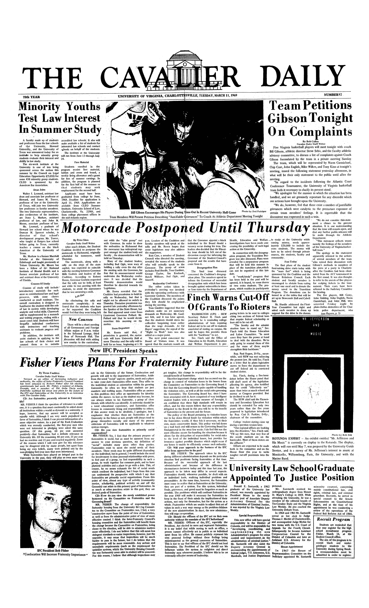
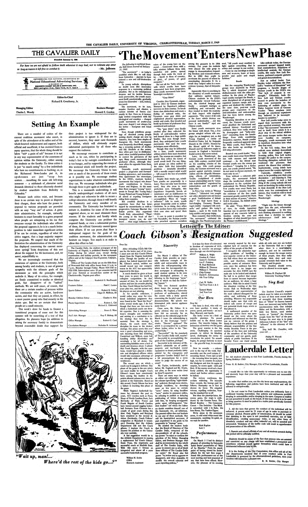
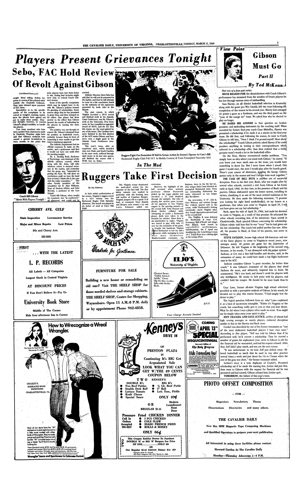
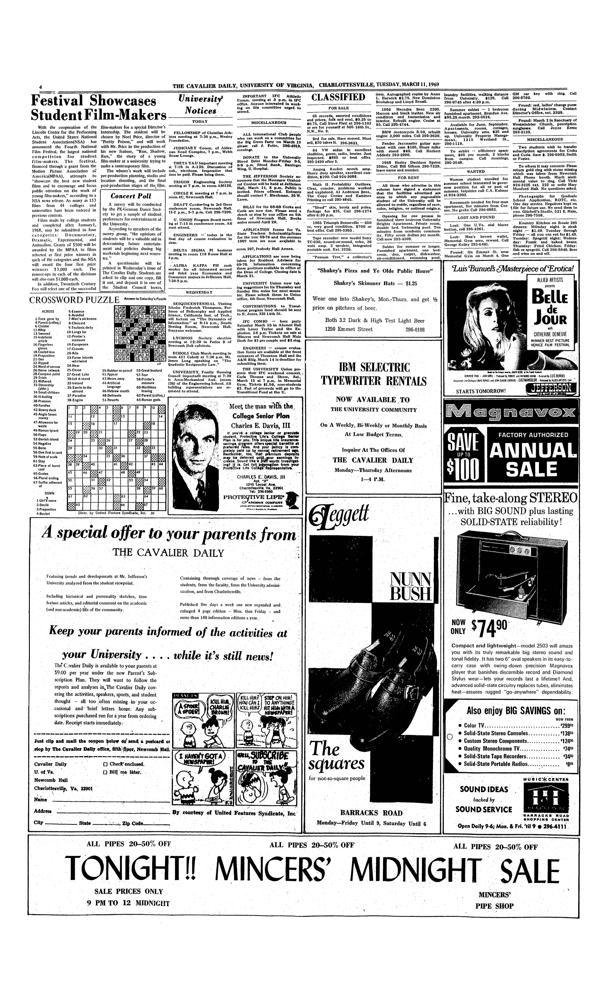

<text>
<body>
<div1 type="nameplate">
<pb/>
<head>THE CAVALIER DAILY</head>
<ab><num type="volume" value="79">79th YEAR</num>
<name type="place">UNIVERSITY OF VIRGINIA, CHARLOTTESVILLE</name>,
<date value="1969-03-11">TUESDAY, MARCH 11, 1969</date>
<num type="number" value="92">NUMBER 92</num></ab>
</div1>
<div1 type="article" id="a1.1">
<head>Minority Youths <lb/>
Test Law Interest <lb/>
In Summer Study</head>
<p>A faculty made up of students <lb/>
and professors from the law schools <lb/>
<!-- content continues... -->
CLEO is sponsored by the <lb/>
American Bar Association.</p>
<div2 type="section">
<head>Dean Joins</head>
<p>Walter J. Leonard, assistant law <lb/>
dean and associate law professor at <lb/>
<!-- content continues... -->
from college placement offices in <lb/>
the mid-Atlantic region.</p>
</div2>
</div1>
<div1 type="figure">
<figure>
<byline>Photo by Ted Putziger</byline>
<head>Bill Gibson Encourages His Players During Time-Out In Recent University Hall Game</head>
<p>Team Members Will Present Petition Describing "Justifiable Grievances" To Coach At Athletic Department Meeting Tonight</p>
</figure>
</div1>
<div1 type="article" id="a1.2" next="a3.1">
<head>Team Petitions <lb/>
Gibson Tonight <lb/>
On Complaints</head>
<byline>By Bob Cullen <lb/>
Cavalier Daily Staff Writer</byline>
<p>Five Virginia basketball players will meet tonight with coach <lb/>
Bill Gibson, athletic directory Steve Sebo, and the faculty athletic <lb/>
<!-- content continues... -->
arrested Friday night by <lb/>
plain-clothes detectives of the Char- <lb/>
lotte police department, who</p>
<ab type="ref"><ref target="a3.1">(see Players, p. 3)</ref></ab>
</div1>
<div1 type="article" id="a1.3">
<head>Motorcade Postponed Until Thursday</head>
<byline>By Peter Shea <lb/>
Cavalier Daily Staff Writer</byline>
<p>After much debate, the Student <lb/>
Coalition decided to postpone the <lb/>
<!-- continues -->
asked each member to drum up <lb/>
support for the drive in the dorms.</p>
</div1>
<!-- The following article has this dateline: "WASHINGTON (UPI)".
The letters "UPI" indicate that this is a wire-service article.
Capture article headline only. -->
<div1 type="article" id="a1.4">
<head>Finch Warns Cut-Off <lb/>
Of Grants to Rioters</head>
<wireArticle/>
<p/>
</div1>
<div1 type="filler">
<head>New Courses</head>
<p>There will be a short meeting <lb/>
of all Government and Foreign <lb/>
Affairs majors at 8 p.m. today <lb/>
in the Informal Lounge, third <lb/>
floor of Newcomb Hall. The <lb/>
discussion will deal with adding <lb/>
new courses to the curriculum.</p>
</div1>
<div1 type="figure">
<byline>Photo by Bob Gill</byline>
<head rend="inline">ROTUNDA EXHIBIT —</head>
<p>An exhibit entitled "Mr. Jefferson and <lb/>
His Music" is currently on display in the Rotunda. The display <lb/>
<!-- continues... -->
Monticello, Williamsburg, Paris, the University, and with the <lb/>
Marine Band.</p>
</div1>
<div1 type="article" id="a1.4">
<head type="sub">New IFC President Speaks</head>
<head type="main"><i>Fisher Views Plans For Fraternity Future</i></head>
<byline>By Thom Faulders <lb/>
Cavalier Daily Staff Writer</byline>
<p><i>Termed as an office of increasing influence and <lb/>
authority, the office of Inter-Fraternity Council President <lb/>
<!-- continues ... -->
</i></p>
<p>
<!-- continues ... -->
fraternity men whenever possible. I believe this to be an <lb/>
extremely effective means of leadership.</p>
</div1>
<div1 type="article" id="a1.5">
<head>University Law School Graduate <lb/>
Appointed to Justice Position</head>
<p>Donald E. Santarelli, a 1962 <lb/>
graduate of the University law <lb/>
<!-- continues ... -->
review of the operations of the <lb/>
Federal Bail Reform Act of 1966.</p>
</div1>
<div1 type="filler">
<head>Recruit Program</head>
<p>Students are reminded that <lb/>
they may register for the high <lb/>
<!-- continues ... -->
A recommendation must be <lb/>
submitted in order to register.</p>
</div1>

<div1 type="masthead" id="m1" next="m2">
<pb n="2"/>
<head>THE CAVALIER DAILY</head>
<ab rend="center">Founded January 8, 1890</ab>
<cit>
<q><i>For here we are not afraid to follow truth wherever it may lead, nor to tolerate any error <lb/>
so long as reason is left free to combat it.</i></q>
<bibl><author>—Mr. Jefferson</author></bibl>
</cit>
<figure/>
<table>
<row>
<cell/>
<cell rend="center"><b>Publisher</b> <lb/>
Charles A. Hite, III</cell>
<cell/>
</row>
<row>
<cell><b>Editor</b> <lb/>
Robert B. Cullen</cell>
<cell rend="center"><b>Managing Editor</b> <lb/>
Roderick O. MacDonald</cell>
<cell rend="right"><b>Business Manager</b> <lb/>
Roy P. Bishop, III</cell>
</row>
</table>
</div1>
<div1 type="op-ed">
<head>'The Movement' Enters New Phase</head>
<p><i>The following is reprinted from <lb/>
the Wall Street Journal of January <lb/>
31, 1969.</i></p>
<p>"The movement" — as today's <lb/>
youthful rebels like to call their <lb/>
<!-- continues... -->
more than a decision to make <lb/>
adolescence itself into an <lb/>
ideology."</p>
</div1>
<div1 type="op-ed">
<head>Setting An Example</head>
<p>There are a number of critics of the <lb/>
current coalition movement who assert, in <lb/>
<!-- continues... -->
hesitate no longer. Too much is at stake to <lb/>
allow this effort to fail.</p>
</div1>
<div1 type="op-ed">
<head type="sub"><u>Letters To The Editor:</u></head>
<head type="main"><i>Coach Gibson's Resignation Suggested</i></head>
<div2 type="letter">
<opener>
<salute>Dear Sir:</salute>
</opener>
<p>After defending Coach Bill Gib- <lb/>
son for the better part of six years, <lb/>
<!-- continues... -->
"affronts" to the citizenry of this <lb/>
state.</p>
<p>Sieg heil! Mr. Chandler, with <lb/>
your red . . .</p>
<closer>
<signed rend="indent">Phillip W. Worrall <lb/>
Architecture 5</signed>
</closer>
</div2>
</div1>
<div1 type="masthead" id="m2" prev="m1">
<p>The Cavalier Daily, the student newspaper of the <lb/>
University of Virginia, is published Monday through <lb/>
Friday during the school year, except during <lb/>
examination and holiday periods, in the newspaper <lb/>
offices and at the Culpeper Star-Exponent, Culpeper, <lb/>
Virginia.</p>
<p>Offices of The Cavalier Daily are on the fifth floor <lb/>
of Newcomb Hall with office hours from 11 a.m. to <lb/>
5 p.m., Monday through Friday. Phone 924-3387 or <lb/>
924-3388. Subscription rates: $5 per semester and $9 <lb/>
per year. Entered as second-class matter at the <lb/>
Charlottesville, Virginia post office.</p>
<table>
<row>
<cell>News Editor</cell>
<cell rend="right">Roderick O. MacDonald</cell>
</row>
<!-- continues... -->
<row>
<cell>Circulation Manager</cell>
<cell rend="right">Nicholas H. Acheson</cell>
</row>
</table>
</div1>
<cartoon/>
<div1 type="op-ed">
<head>Lauderdale Letter</head>
<p>To: All students planning to visit Fort Lauderdale, Florida during the <lb/>
Spring Holidays 1969</p>
<p>From: R. H. Bubier, City Manager, City of Fort Lauderdale, Florida</p>
<p>I would like to take this opportunity to welcome you to our city <lb/>
and sincerely hope that your stay will be a pleasant and memorable <lb/>
experience.</p>
<!-- continues... -->
<closer>
<signed>R. H. Bubier, City Manger</signed>
</closer>
</div1>

<div1 type="article" id="a3.1" prev="a1.2">
<pb n="3"/>
<head type="main">Players Present Grievances Tonight</head>
<head type="sub">Sebo, FAC Hold Review <lb/>
Of Revolt Against Gibson</head>
<ab type="ref" rend="center"><ref target="a1.2">(continued from p.1)</ref></ab>
<p>caught them selling tickets for <lb/>
prices in excess of the printed value <lb/>
outside the Charlotte Coliseum. <lb/>
They were released upon payment <lb/>
of $25. fines.</p>
<!-- continues... -->
<p>Two team members who have <lb/>
been quoted from statements made <lb/>
in Charlotte Thursday night have <lb/>
said that Gibson's methods have <lb/>
caused a general <sic>brwakdown</sic> in <lb/>
team morale, to the point that <lb/>
<figure>
<head>Coach Bill Gibson</head>
<p>Meets With Players Tonight</p>
</figure>
some players have lost their desire <lb/>
to win, feeling that victories might <lb/>
serve only to extend Coach Gib- <lb/>
son's tenure.</p>
<!-- continues... -->
<p>This year's team, after an <lb/>
auspicious start, which included <lb/>
wins over Duke and South Carolina <lb/>
in the same week, suffered through <lb/>
eight losses in its last nine games, <lb/>
and finished the season with a <lb/>
99-86 loss to Duke</p>
</div1>
<!-- Content on page 3 continues... -->

<div1 type="article" id="a4.1">
<pb n="4"/>
<head><b>Festival Showcases <lb/>
Student Film-Makers</b></head>
<p>With the cooperation of the <lb/>
Lincoln Center for the Performing <lb/>
<!-- continues... -->
</p>
</div1>
<div1 type="filler">
<head><b><i>Concert Poll</i></b></head>
<p>A survey will be conducted <lb/>
by the PK-German Dance Soci- <lb/>
<!-- continues... -->
</p>
</div1>
<div1 type="univ-notices">
<head><i>University Notices</i></head>
<div2 type="section">
<head>TODAY</head>
<p>FELLOWSHIP of Christian Ath- <lb/>
letes meeting at 7:30 p.m., Wesley <lb/>
Foundation.</p>
<!-- continues... -->
<p>THE UNIVERSITY Union pre- <lb/>
sents their IFC weekend concert. <lb/>
Carla Thomas adn Show, Sat., <lb/>
March 15 at 7 p.m. in Memorial <lb/>
Gym. Tickets $1.50, non-students <lb/>
$2. Part of proceeds will go to the <lb/>
Transitional Fund at the U.</p>
</div2>
</div1>
<div1 type="classifieds">
<head>CLASSIFIED</head>
<div2 type="section">
<head>FOR SALE</head>
<p>65 records, assorted conditions <lb/>
and prices, folk and soul, $0.25 to <lb/>
<!-- continues... -->
Thursday: Fried Chicken. Friday: <lb/>
fish or spegetti. Call 296-5940. Beer <lb/>
and wine on and off.</p>
</div2>
</div1>
<puzzle/>
<ad/>
<ad/>
<ad/>
<ad/>
<ad/>
<ad/>
<ad/>
<ad/>
</body>
</text>
</TEI.2>